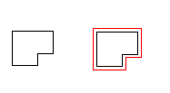

|
Offset Method |
Creates a new object at a specified offset distance from an existing object.
Signature
RetVal = object.Offset(Distance)
Object
Arc, Circle, Ellipse, Line, LightweightPolyline, Polyline, Spline, XLine
The objects this method applies to.
Distance
Double; input-only
The distance to offset the object. The offset can be a positive or negative number, but it cannot equal zero. If the offset is negative, this is interpreted as being an offset to make a "smaller" curve (that is, for an arc it would offset to a radius that is "Distance less" than the starting curve's radius). If "smaller" has no meaning, then it would offset in the direction of smaller X, Y, and Z WCS coordinates.
RetVal
Variant (array of objects)
An array of the newly created objects resulting from the offset.
Remarks
For many curves, the result of this operation will be a single new curve (which may not be of the same type as the original curve). For example, offsetting an ellipse will result in a spline because the result does not fit the equation of an ellipse. In some cases it may be necessary for the offset result to be several curves.

An original object and the object with an offset in red.
| Comments? |